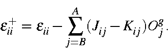
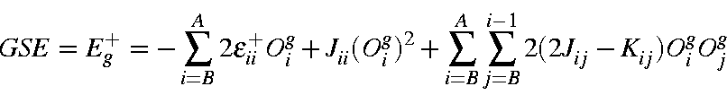

The energy of the system after all the electronic terms arising from the
electrons of the M.O.s involved in the starting configuration are removed
is a useful quantity. Removal of these terms lowers the orbital
energies thus:

The arbitrary zero of energy in a MECI calculation is the starting ground
state, without any correction for errors introduced by the use of fractional
occupancies. In order to calculate the energy of the various configurations,
the energy of the vacuum state (i.e., the state resulting from removal
of the electrons used in the C.I.) needs to be evaluated. This energy is
given by:

(Within the MECI routine, GSE refers to Eg+.)
By redefining the system so that those filled M.O.s which are not used in the
MECI are considered part of an
unpolarizable core, the new energy levels
εi-
can be identified with
the one-electron energies Hii and the total electronic energy Er of any
microstate is set equal to the sum of the energy of the electrons considered in
the microstate plus Eg+.